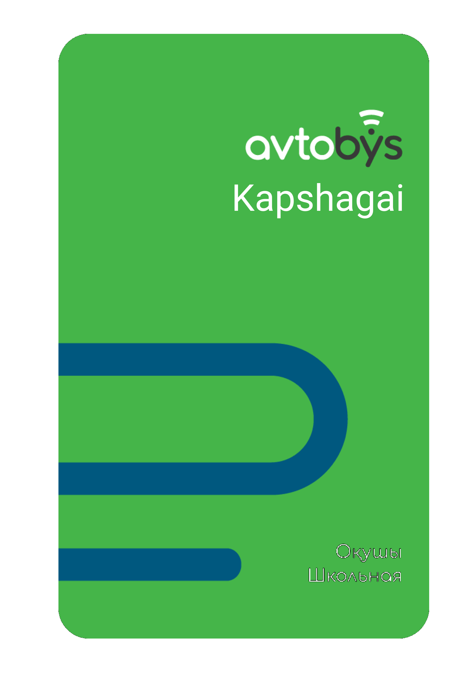
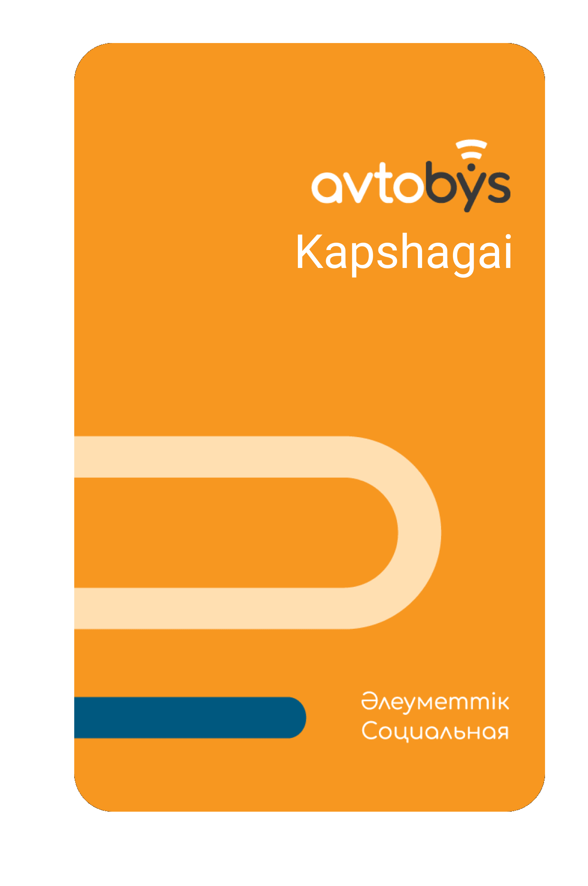
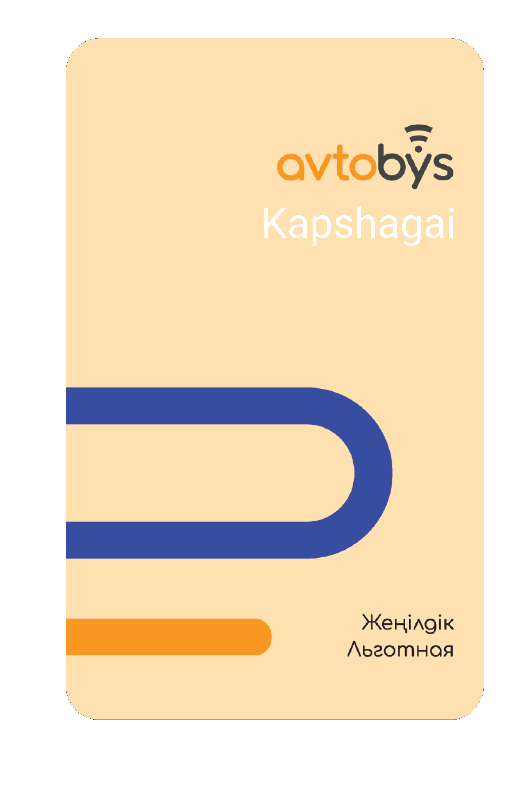
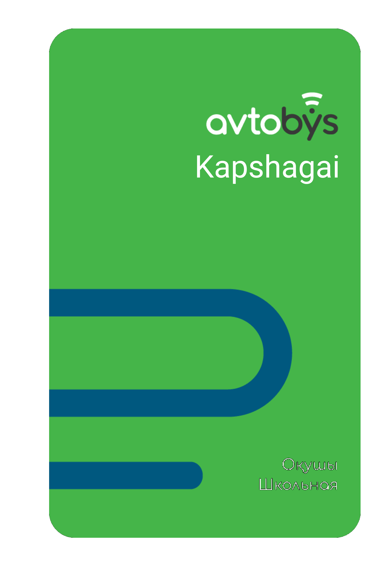
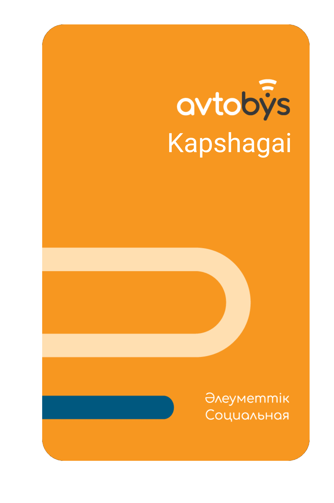
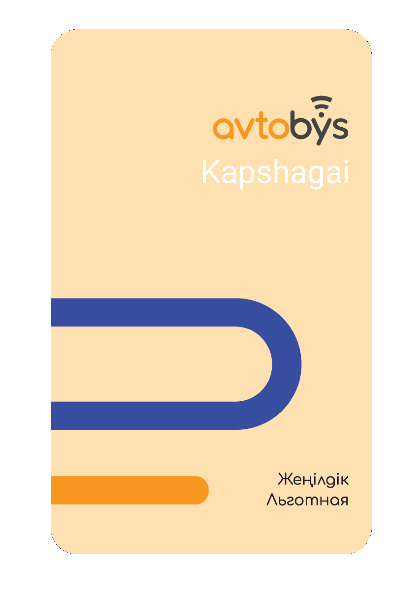

01
02
03
04

05
06
Для того, чтобы зарегистрироваться в Мобильном приложении необходимо осуществить следующие действия:
1. Введите номер телефона и выберите город.
2. По указанному номеру телефона придет СМС-код, который нужно ввести в приложении.
3. Введите СМС-код.
4. Поздравляем с успешной регистрацией!
На данный момент имеется два способа пополнения баланса в мобильном приложении:
Для пополнения баланса Avtobýs с помощью интернет банкинга:
Найдите услугу Avtobýs вашего города в соответствующих приложениях или сайтах
Введите номер телефона, зарегистрированного в приложении или номер транспортной карты
Введите необходимую сумму и подтвердите платеж
Баланс Avtobys отображается в главном меню приложения.
Чтобы оплатить проезд с помощью Мобильного приложения нужно:
1. Войти в приложение Avtobýs;
2. Нажать на кнопку “Оплатить проезд”;
3. Навести камеру на QR-код в автобусе или вввести гос номер автобуса;
4. Подтвердить оплату;
5. Приобретенный Билет можно посмотреть во вкладке “Мои поездки”.
Для того, чтобы зарегистрироваться в Мобильном приложении Аvtobýs необходимо осуществить следующие действия:
1. Введите номер телефона и выберите город.
2. По указанному номеру телефона придет СМС-код, который нужно ввести в приложении Аvtobýs.
3. Введите СМС-код.
4. Поздравляем с успешной регистрацией!
На данный момент имеется два способа пополнения баланса Avtobýs в мобильном приложении:
Для пополнения баланса Avtobýs с помощью интернет банкинга:
Найдите услугу Avtobýs вашего города в соответствующих приложениях или сайтах
Введите номер телефона, зарегистрированного в приложении или номер транспортной карты
Введите необходимую сумму и подтвердите платеж
Баланс Avtobys отображается в главном меню приложения.
Чтобы оплатить проезд с помощью Мобильного приложения нужно:
1. Войти в приложение Avtobýs;
2. Нажать на кнопку “Оплатить проезд”;
3. Навести камеру на QR-код в автобусе или вввести гос номер автобуса;
4. Подтвердить оплату;
5. Приобретенный Билет можно посмотреть во вкладке “Мои поездки”.
На данный момент имеется два способа пополнения баланса Avtobýs в мобильном приложении:
Для пополнения баланса Avtobýs с помощью интернет банкинга:
Найдите услугу Avtobýs вашего города в соответствующих приложениях или сайтах
Введите номер телефона, зарегистрированного в приложении или номер транспортной карты
Введите необходимую сумму и подтвердите платеж
1. Убедитесь, что на Вашей Транспортной карте есть денежные средства.
2. Приложите Транспортную карту к стационарному или Мобильному терминалу автобуса.
3. Удерживайте карту в течение 2 секунд и дождитесь подтверждения о завершении оплаты.
1. Перейти по ссылке https://t.me/AvtobysPassengerBot
2. Чтобы приступить к использованию, введите команду /start
3. Чтобы узнать историю о 5 последних поездках и пополнениях, введите номер транспортной карты в формате: 7125ХХХХХХХ
4. Чтобы узнать историю о 60 последних поездках, введите следующую команду в формате: /h 7125ХХХХХХХ
Чтобы привязать транспортную карту к мобильному приложению Avtobýs, необходимо:
1. Скачать мобильное приложение Avtobýs;
2. Найти раздел “Транспортные карты” в приложении;
3. Назвать карту, указать номер ИИН и номер транспортной карты
Распечатка либо детализация по поездкам не предоставляется, так как Клиент может самостоятельно получить отчет по последним 60 поездкам через чат-бота в Telegram (https://t.me/AvtobysPassengerBot). Для этого необходимо отправить следующую команду в формате: /h 712ХХХХХХХХ либо 7125ХХХХХХХ. Отчет будет выслан в формате PDF.
Данная ситуация может возникнуть, если Клиент зашел в автобус на конечной остановке и произвел оплату за проезд посредством стационарного валидатора, до того как Кондуктор завершил рейс и автобус начал движение. Нужно запросить у Клиента номер карты и проверить, через чат-бота в Telegram (https://t.me/AvtobysPassengerBot), было ли действительно списание средств на автобусе с одним и тем же госномером, но с разными номерами рейсов (время между двумя оплатами составляет около 5 минут). В случае, если такие поездки есть, то Клиенту необходимо рекомендовать не производить оплату до тех пор, пока автобус не начнет движение по новому рейсу.
QR-код это зашифрованный номер автобуса, в виде квадрата состоящий из квадратиков. Он необходим для оплаты посредством мобильного приложения. QR-код можно найти в салоне автобуса.
Чтобы оплатить проезд с помощью приложения нужно:
1. Войти в приложение Avtobýs
2. Нажать на кнопку “Оплатить проезд”
3. Навести камеру на QR-код в автобусе или выбрать оплату с помощью гос. номера автобуса
4. Проверить маршрут или ввести гос. номер. автобуса
5. Подтвердить оплату
6. Приобретенный билет можно посмотреть во вкладке “Мои поездки” или на главном меню.